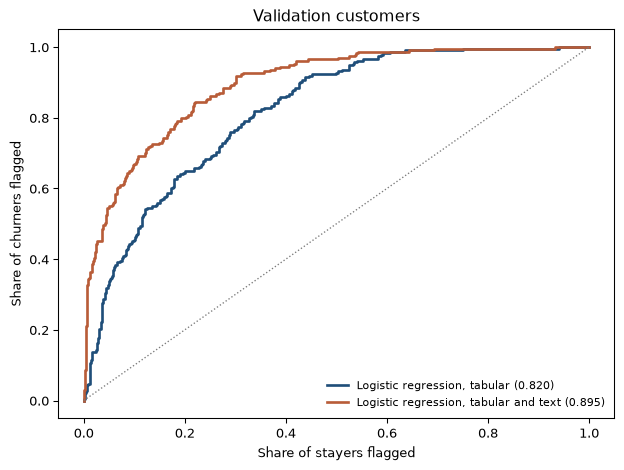
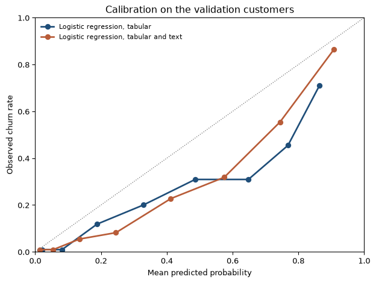

Send the same customers to a cloud service and compare the probabilities
Sections 2.e and 2.f already produced a probability of churn for each held-out customer. A logistic regression produced it, on this computer, from the customer table and from the communications.
This session asks a cloud service to produce its own probability for the same customers. You then compare the two sets of numbers, and you see whether the campaign decision changes.
You can follow the document in two ways.
Read the comparison. Leave every switch as it is written. The cells use files already saved on this computer. Google is not called.
Train a model on Google. Follow the account steps, then change one line, START_PAID_TRAINING = False, to True.
Money is spent only if you change that line
Rendering this file does not create a Google resource and does not start a training job. The training cell spends money only when START_PAID_TRAINING is True.
Run the cells from top to bottom. Read the paragraph under each table before you continue.
7.1 Stage 1 — What you already have, and what the cloud adds
From Section 2.e you have two scores for the customers who were held out of the fit:
Column in the result file
Where it comes from
p_logistic_tabular
Logistic regression on the structured customer fields
p_logistic_text
Logistic regression on those fields plus the communications
From Section 2.f you have, for the same customers, a contact cost, a loss if the customer leaves, and a campaign probability p1.
The cloud service does not use those scores. You send it a table. It tries several models, keeps one, and returns a new probability for each customer you ask it to score. That probability is the chance the customer leaves. The service names it from your target column and your positive label. In the course files the column that comes back is Churn_Yes_score. This lesson stores it as p_automl_tabular or p_automl_text.
The comparison uses the same validation customers for every model. A higher ranking score is not assumed to produce a cheaper campaign. The last tables show the two results side by side.
7.2 Stage 2 — The three places you will work
Place
What it is
What you do there
This document
The workshop on your computer
Choose the files, start the job, read the probabilities
The project folder is the folder that contains _quarto.yml, lessons/, and data/.
7.3 Stage 3 — Words used from here on
Google account. The login you use for the console. Create one at https://accounts.google.com/ if you do not have one.
Project. A named container for one piece of work. The training job, the stored files, and the bill sit inside one project. The project has a display name, which you choose, and a project ID, which is shorter. The commands use the project ID, for example churn-workshop-123456.
Billing account. The payment method attached to the project. Training is refused until a billing account is linked. New accounts are sometimes given trial credit. The billing page shows the amount that remains. When the credit is used, the payment method is charged.
Region. The group of data centers that will hold the files and run the job. This lesson uses us-central1. The storage folder and the job use the same region. The price list is different in another region.
Bucket. A named folder on Google’s disks. The training table is copied into it. The probabilities are written back into it, then copied onto your computer. The name is yours to choose. It must be unique across Google Cloud, and it may contain only lowercase letters, numbers, and hyphens.
Batch prediction. You send a file of customers. The service writes a file of probabilities. The computer that does this runs for that job and then stops.
Endpoint. A computer that stays on so that one customer can be scored at any moment. It is billed for every hour it stays on. This lesson uses batch prediction. It does not create an endpoint.
Node hour. One machine working for one hour. The training cap below is one node hour per model. The service can stop earlier. It does not train past the cap. Batch prediction is a separate charge and is not part of that cap.
7.4 Stage 4 — What an API is, and how it reaches this file
An API (application programming interface) is a fixed list of requests that a program is allowed to send to a service. The console is for a person. The API is for a program.
For this lesson the requests are: store this table, train a classification model, score this other table, delete what you created. You do not type those requests by hand.
Three separate steps make the requests possible. None of the three starts the training.
Allow the project to receive the requests. In the console, open these two pages and click Enable on each.
Enabling an API gives permission. It does not upload your customers and it does not train a model.
Install the translator on this computer. The Python package google-cloud-aiplatform turns the call in the training cell into one of those requests. google-cloud-storage copies the CSV files. Install them once, from the project folder, after you have decided to run a paid job:
On Windows, activate with .venv\Scripts\activate. You do not need these packages to read the saved comparison.
Sign in, so the package can prove who is asking. The command is in Stage 7. It opens a browser. The proof stays in your user account on this computer. Do not download a key file into this project folder, and do not paste a password into a cell.
The pages that describe this service sometimes say Gemini Enterprise Agent Platform. In the console the menu is Vertex AI. The Python package is google-cloud-aiplatform. Those are the current names for the same tabular training service. This lesson uses that service.
While a job is running you can watch it in the console: Vertex AI → Training, then Vertex AI → Batch predictions. The probabilities used in the tables below are the ones saved in the CSV on your computer.
7.5 Stage 5 — Point the lesson at your files
The course example uses the telco files from Sections 2.e and 2.f. To use your own extract, replace the paths and the column names in the next cell, set CLOUD_MODE to "SAVE", and run the cell again. "SAVE" rebuilds the files on this computer. It does not call Google.
Your customer file replaces TABULAR_FILE.
One row per customer. The identifier is not repeated.
The identifier column, the target column, and every column you list under the numeric and categorical features.
The target has two labels. POSITIVE_LABEL is the label you care about. In the course file that label is Yes, the customer left. The saved scores code it as 1.
Leave the identifier and the target out of the feature lists. Leave out any column that was filled in after the customer left.
Your message file replaces TEXT_FILE.
One row per message. A customer may have several messages.
The same identifier column, a text column, and an order column. The order column numbers that customer’s messages. The same number is not used twice for one customer.
Messages for one customer are sorted by that order and joined with a blank line. The cloud model receives that joined text in a column named customer_text. The logistic regression from Section 2.e does not receive the raw text. It uses the compressed text columns from that workshop. The comparison includes that difference.
If your message file has no type column, set TEXT_TYPE_COLUMN to "".
SAVED_PROBABILITY_FILE is the file Section 2.e wrote for the logistic regression that uses the communications. In the course it is data/processed/telco/test_probabilities_with_text.csv. It must list the same test customers, in the same order, with the probability and the observed outcome. Set RANDOM_STATE and TEST_SIZE to the values that produced that file. In the course those values are 42 and 0.25.
ECONOMICS_FILE is the campaign file from Section 2.f. One row per customer, with the campaign probability, the contact cost, and the loss if the customer churns. The four column-name settings under the paths must match that file.
The service accepts a training table of at least 1,000 rows. With TEST_SIZE at 0.25, the customer file needs more than about 1,400 rows. Blank numeric values are stored as zero.
The training cap is saved when the files are built. If you change BUDGET_MILLI_NODE_HOURS, set CLOUD_MODE to "SAVE" and run the next two cells again before you start a paid job. 1000 is one node hour, and it is the smallest cap the service accepts.
from pathlib import Pathimport osimport sysimport pandas as pdifnot Path("data/raw/telco/telco_customers.csv").exists(): os.chdir(Path("..").resolve())ifstr(Path.cwd()) notin sys.path: sys.path.insert(0, str(Path.cwd()))import python.workshop_automl as automlautoml.use_course_example()# Your files. Replace the four paths, and the folder, for another dataset.automl.TABULAR_FILE ="data/raw/telco/telco_customers.csv"automl.TEXT_FILE ="data/raw/telco/customer_communications.csv"automl.SAVED_PROBABILITY_FILE ="data/processed/telco/test_probabilities_with_text.csv"automl.ECONOMICS_FILE ="data/processed/telco/campaign_example_population.csv"automl.OUTPUT_DIR ="data/processed/telco/automl"# Column names in those files.automl.ID_COLUMN ="customerID"automl.TARGET_COLUMN ="Churn"automl.POSITIVE_LABEL ="Yes"automl.TEXT_COLUMN ="text"automl.TEXT_ORDER_COLUMN ="text_index"automl.TEXT_TYPE_COLUMN ="communication_type"automl.SAVED_PROBABILITY_ID ="customer_id"automl.SAVED_PROBABILITY_COLUMN ="p0"automl.SAVED_OUTCOME_COLUMN ="observed_outcome"automl.ECONOMICS_ID_COLUMN ="customer_id"automl.ECONOMICS_P1_COLUMN ="p1"automl.ECONOMICS_COST_COLUMN ="example_cost"automl.ECONOMICS_LOSS_COLUMN ="example_loss"automl.NUMERIC_FEATURES = ["tenure", "MonthlyCharges", "TotalCharges"]automl.CATEGORICAL_FEATURES = ["gender","SeniorCitizen","Partner","Dependents","PhoneService","MultipleLines","InternetService","OnlineSecurity","OnlineBackup","DeviceProtection","TechSupport","StreamingTV","StreamingMovies","Contract","PaperlessBilling","PaymentMethod",]# The same split that wrote SAVED_PROBABILITY_FILE.automl.RANDOM_STATE =42automl.TEST_SIZE =0.25# Half of that earlier test set is the comparison set. The other half is kept aside.automl.HOLDOUT_VALIDATION_FRACTION =0.5automl.DECISION_THRESHOLD =0.5# 1000 milli node hours = 1 node hour per model. The smallest cap.automl.BUDGET_MILLI_NODE_HOURS =1000# A third model, communications only, is off. True adds one more training cap.automl.INCLUDE_TEXT_ONLY =False# The campaign budget from Section 2.f, applied to the comparison customers.automl.BUDGET =8000# "LOAD" reads saved files. "SAVE" rebuilds them here. Neither calls Google.automl.CLOUD_MODE ="LOAD"pd.set_option("display.max_columns", 8)pd.set_option("display.width", 120)pd.set_option("display.max_colwidth", 60)pd.set_option("display.float_format", lambda value: f"{value:.3f}")automl.active_settings()
Check the table. The paths and the column names in the table are the ones the next cell will use.
7.6 Stage 6 — Who is sent to Google, and who is kept for the comparison
Section 2.e held out 25 percent of customers. Those held-out customers are the ones in SAVED_PROBABILITY_FILE. This lesson does not draw a new split of the whole table.
The training file contains only the customers who were used to fit the logistic regression. Google may split that file internally. A column named ml_split gives it the three labels it requires: TRAIN, VALIDATE, and TEST. Those labels are written on training customers only. Google uses its VALIDATE rows to choose a model. The current documentation says the model that is kept can be fit again on every uploaded row. That is why the comparison customers are not in the upload.
The earlier test set is split in half, with the same RANDOM_STATE. One half is the validation set. Every table from here on uses that half. The other half is a final test set. Its identifiers are saved, and it is not scored.
state = automl.load_workshop()state["split_summary"]
AutoML probabilities are not in the saved file. The tables below use the local logistic regressions. A render does not start a training job.
Group
Rows
Positive
Positive rate
0
Previous training
5282
1402
0.265
1
Previous test
1761
467
0.265
2
Validation, used for comparison
880
233
0.265
3
Final test, not scored
881
234
0.266
4
Platform TRAIN inside previous training
4224
1122
0.266
5
Platform VALIDATE inside previous training
529
140
0.265
6
Platform TEST inside previous training
529
140
0.265
Previous training is the file Google receives. Validation, used for comparison is the file Google is asked to score after training. Final test, not scored stays on this computer. The three Platform rows are the labels inside the training file. They are not the validation customers.
The next cell shows the first rows of the training file that includes the communications. customerID is kept so the probabilities can be matched later. It is not used as a predictor. Churn is the target. ml_split is the label from the table above. customer_text is the joined messages. The service is told that this column is text, so it uses the words. The other experiment is the same table without customer_text.
automl.training_preview("tabular_text", rows=2)
customerID
tenure
MonthlyCharges
TotalCharges
...
PaymentMethod
customer_text
Churn
ml_split
0
3704-IEAXF
72
53.650
3784.000
...
Credit card (automatic)
**Customer:** I am calling about the service. What I wan...
No
TRAIN
1
5175-AOBHI
4
46.000
193.600
...
Mailed check
**Subject:** Your monthly bill — $46.00\n\nHello,\n\nYou...
Yes
TRAIN
2 rows × 23 columns
A third experiment, communications only, is left out while INCLUDE_TEXT_ONLY is False.
The files are in the folder you set as OUTPUT_DIR. For the course example that folder is data/processed/telco/automl/.
File
Who is in it
training_tabular.csv
Training customers, structured fields, target, ml_split
training_tabular_text.csv
The same customers, plus customer_text
predict_validation_tabular.csv
Validation customers, structured fields, no target
predict_validation_tabular_text.csv
The same customers, plus customer_text
validation_probabilities.csv
The comparison file. Local scores now. Cloud scores after Stage 9
You can rebuild those files from a terminal. This command does not call Google.
python python/workshop_automl.py prepare
7.7 Stage 7 — Open the account, the project, and the bill
Do these steps in the browser before the training cell.
Copy the project ID. Find it on the project dashboard, or under IAM & Admin → Settings. It is not the display name.
Open https://console.cloud.google.com/billing. Create a billing account if you do not have one, add a payment method, and link the account to this project. Read the credit that remains.
Enable the two APIs from Stage 4. Click Enable on each library page. If the button says Manage, the API is already enabled.
Open https://cloud.google.com/vertex-ai/pricing. Read the tabular AutoML training price and the batch prediction price for us-central1, or for the region you will type in the next cell.
The training cell uses two models. Each one is capped at the node hours you set (1000 means 1). Each one then has one batch prediction. The CSV files are stored in your bucket. A model that is stored and not deployed is not billed as a prediction machine. This lesson does not create an endpoint. If you cancel a training job, you pay for the time already used. A training failure other than a cancellation is not billed.
automl.cost_table()
Component
What is billed
This run
0
Experiment A, tabular AutoML
Training node hours, up to the cap, and batch-prediction...
Training cap 1 node hour, then one batch prediction.
1
Experiment B, tabular AutoML plus text
Training node hours, up to the cap, and batch-prediction...
Training cap 1 node hour, then one batch prediction.
2
Online endpoint
Node hours from deployment until the model is undeployed.
Not created.
3
Cloud Storage
Storage of the uploaded CSV files and the prediction out...
Prefix telco-automl/ in the bucket you name.
4
Model registry
A model that is not deployed is not charged for prediction.
Created. Delete it with the cleanup command when you are...
The dollar amount is the rate on the pricing page times those hours. The table states the cap. It does not state a dollar figure, because the rate depends on the region and on the date you read the page.
Close the terminal and open it again in the project folder after the install.
Type your project ID and bucket name in the next cell, then run it. The cell prints the commands. It does not run them. Copy the printed lines into the terminal.
The bucket name must be new. If the create command says the name is already taken, change BUCKET and run the cell again. --location must be the same region as REGION.
PROJECT_ID ="YOUR_PROJECT_ID"REGION ="us-central1"BUCKET ="YOUR_BUCKET_NAME"print("Copy these lines into the terminal. Run them once.")print()print("gcloud auth application-default login")print(f"gcloud config set project {PROJECT_ID}")print("gcloud services enable aiplatform.googleapis.com storage.googleapis.com")print(f"gcloud storage buckets create gs://{BUCKET} "f"--location={REGION} --uniform-bucket-level-access")
Copy these lines into the terminal. Run them once.
gcloud auth application-default login
gcloud config set project YOUR_PROJECT_ID
gcloud services enable aiplatform.googleapis.com storage.googleapis.com
gcloud storage buckets create gs://YOUR_BUCKET_NAME --location=us-central1 --uniform-bucket-level-access
gcloud auth application-default login opens a browser. Sign in with the same Google account that owns the project. Leave the terminal alone until it says the credentials have been saved.
The same four lines, with the names still to fill in, are:
7.9 Stage 9 — Start the training from this document
The next cell is the one that spends money. It uploads the training file, trains the tabular model, scores the validation customers, then does the same for the tabular-plus-text model. It writes p_automl_tabular and p_automl_text into validation_probabilities.csv, matched on the customer identifier.
Leave START_PAID_TRAINING as False until the billing account is linked, the two APIs are enabled, the sign-in has finished, and the bucket exists. Then set it to True and run the cell. Leave it running. Setup adds time on the clock beyond the one-hour cap. If the cell stops after it has printed a pipeline name, run it again with the switch still True. It waits for that job. It does not submit a second training job for a model that is already recorded.
The same job from a terminal, after the exports below, is the last block in this stage. Use the cell or the terminal, not both at the same time.
START_PAID_TRAINING =Falseos.environ["GOOGLE_CLOUD_PROJECT"] = PROJECT_IDos.environ["GOOGLE_CLOUD_REGION"] = REGIONos.environ["GOOGLE_CLOUD_BUCKET"] = BUCKETif START_PAID_TRAINING: os.environ["AUTOML_APPROVE_SPEND"] ="yes" automl.run_cloud(approve_spend=True)else: os.environ["AUTOML_APPROVE_SPEND"] ="no"print("Training was not started. No Google call was made.")print("Set START_PAID_TRAINING = True in this cell when you accept the cost, then run the cell again.")
Training was not started. No Google call was made.
Set START_PAID_TRAINING = True in this cell when you accept the cost, then run the cell again.
From the terminal, the same approval is two lines. The command prints the cost table again and stops if either line is missing.
exportGOOGLE_CLOUD_PROJECT=YOUR_PROJECT_IDexportGOOGLE_CLOUD_REGION=us-central1exportGOOGLE_CLOUD_BUCKET=YOUR_BUCKETexportAUTOML_APPROVE_SPEND=yespython python/workshop_automl.py run --approve-spend
On Windows PowerShell the exports are:
$env:GOOGLE_CLOUD_PROJECT="YOUR_PROJECT_ID"$env:GOOGLE_CLOUD_REGION="us-central1"$env:GOOGLE_CLOUD_BUCKET="YOUR_BUCKET"$env:AUTOML_APPROVE_SPEND="yes"python python/workshop_automl.py run --approve-spend
7.10 Stage 10 — Read the probabilities
Run the next cell after Stage 9. If you left the switch at False, the cloud columns are absent and the message says so. The logistic columns are still there. If the paid cell finished, the cloud columns are in the same rows, one row per validation customer, each probability between 0 and 1.
observed_churn is 1 when the customer left and 0 otherwise. p_logistic_tabular and p_logistic_text are the earlier models. p_automl_tabular is the cloud model on the structured fields. p_automl_text is the cloud model on those fields plus the joined messages. p1, cost, and loss are the campaign inputs from Section 2.f. They do not change when the churn probability changes.
state = automl.load_workshop()state["probabilities"].head()
customerID
observed_churn
p_logistic_tabular
p_logistic_text
p1
cost
loss
0
7996-BPXHY
0
0.116
0.053
0.047
30.000
300.000
1
0376-YMCJC
1
0.773
0.557
0.430
30.000
1087.200
2
5666-MBJPT
0
0.020
0.010
0.009
30.000
301.200
3
6507-ZJSUR
0
0.867
0.734
0.435
45.000
1085.400
4
4701-AHWMW
1
0.332
0.217
0.173
30.000
654.600
A later session can pass any probability column to the targeting calculation as the baseline probability. That session reads this CSV. It does not call Google.
7.11 Stage 11 — Compare the probabilities with the logistic models
Accuracy, precision, and recall use the cutoff in DECISION_THRESHOLD, which is 0.5. ROC-AUC, PR-AUC, log-loss, and the Brier score do not use a cutoff.
ROC-AUC and PR-AUC describe the ranking. Log-loss, the Brier score, and the calibration plot describe the probabilities themselves. The campaign cost uses the probability. A model can rank customers well and still be too high or too low as a probability.
The logistic models were fit with balanced class weights, as in Section 2.e. The cloud models are trained to keep the probabilities accurate, without that reweighting. Read the calibration plot with that difference in mind.
automl.metrics_table(state["probabilities"])
Model
ROC-AUC
PR-AUC
Accuracy
Precision
Recall
Log-loss
Brier
0
Logistic regression, tabular
0.820
0.589
0.718
0.480
0.764
0.524
0.180
1
Logistic regression, tabular and text
0.895
0.770
0.798
0.586
0.803
0.407
0.133
automl.plot_roc(state["probabilities"])

automl.plot_calibration(state["probabilities"])

Until the paid cell has run, these displays contain the two logistic models. After it has run, run the three cells again. The added rows are the cloud models. Compare tabular logistic regression with tabular AutoML. Separately, compare logistic regression with text and AutoML with text. The table is the result. It is not a claim that the cloud model is better.
7.12 Stage 12 — Does the campaign decision change?
The contact cost, the loss, and p1 stay the values from Section 2.f. Only the baseline probability of churn changes. The budget is BUDGET, the same 8000 as that workshop, applied to these validation customers.
For each customer the rule from Section 2.f still holds. Target the customer when the expected loss avoided by the campaign is larger than the contact cost. The tables add those customer decisions.
ROC-AUC measures ranking. Expected cost uses the probability values, the loss, the contact cost, and the campaign probability. In the two logistic regressions, Logistic regression, tabular and text has the higher ROC-AUC. Logistic regression, tabular has the lower expected cost. Under the budget, Logistic regression, tabular and text has the lower expected cost. The unconstrained targeting decision differs for 237 validation customers. In tabular data, the AutoML probabilities are not in the saved file. In tabular data and communications, the AutoML probabilities are not in the saved file.
Read that sentence against the table. The model with the higher ROC-AUC and the model with the lower expected cost can be different models. Under the budget they can be different again.
7.13 Stage 13 — Delete the cloud resources
When you have the CSV, the campaign calculation does not need the cloud model. Delete what the paid cell recorded. The next cell deletes those recorded names only. It does not look for other models in the project.
Set DELETE_CLOUD_RESOURCES to True only when you want that deletion, then run the cell.
DELETE_CLOUD_RESOURCES =Falseif DELETE_CLOUD_RESOURCES: os.environ["AUTOML_APPROVE_DELETE"] ="yes" automl.cleanup_cloud(approve_delete=True)else: os.environ["AUTOML_APPROVE_DELETE"] ="no"print("Nothing was deleted.")print("Set DELETE_CLOUD_RESOURCES = True and run this cell when the demonstration is finished.")
Nothing was deleted.
Set DELETE_CLOUD_RESOURCES = True and run this cell when the demonstration is finished.
The paid run also writes data/processed/telco/automl/cleanup_commands.sh with the same resource ids, when the output folder is the course folder. Then confirm the project is clear:
gcloud ai endpoints list --region="$GOOGLE_CLOUD_REGION"gcloud ai models list --region="$GOOGLE_CLOUD_REGION"gcloud ai datasets list --region="$GOOGLE_CLOUD_REGION"gcloud storage ls "gs://$GOOGLE_CLOUD_BUCKET/telco-automl/**"
This lesson does not create an endpoint. If one is listed, billing continues until each deployed model is removed. Replace the ids with the ones from gcloud ai endpoints describe.
gcloud ai endpoints describe ENDPOINT_ID --region="$GOOGLE_CLOUD_REGION"gcloud ai endpoints undeploy-model ENDPOINT_ID \--deployed-model-id=DEPLOYED_MODEL_ID \--region="$GOOGLE_CLOUD_REGION"--quietgcloud ai endpoints delete ENDPOINT_ID --region="$GOOGLE_CLOUD_REGION"--quiet
To stop a training job or a batch job that is still running:
gcloud ai training-pipelines cancel TRAINING_PIPELINE_ID --region="$GOOGLE_CLOUD_REGION"--quietgcloud ai batch-prediction-jobs cancel BATCH_JOB_ID --region="$GOOGLE_CLOUD_REGION"--quiet
The last cell checks the local files. A row that says the AutoML probabilities are not saved means the paid cell has not been run. The check does not start a job to fill that gap.
automl.verify_saved_files()
18 checks passed.
Check
Result
Detail
Required
0
One row per validation customer
Pass
880 rows, 880 identifiers.
Yes
1
Validation customers match the manifest
Pass
The saved order is the validation split order.
Yes
2
Training, validation, and final test do not overlap
Pass
Training 5282, validation 880, final test 881.
Yes
3
Final test is the rest of the previous test set
Pass
The previous test partition is unchanged as the union of...
Yes
4
tabular: training file is the previous training set
Pass
5282 rows.
Yes
5
tabular: prediction file is the validation set
Pass
The final test customers are not in this file.
Yes
6
tabular: split labels exist and the target is not a feature